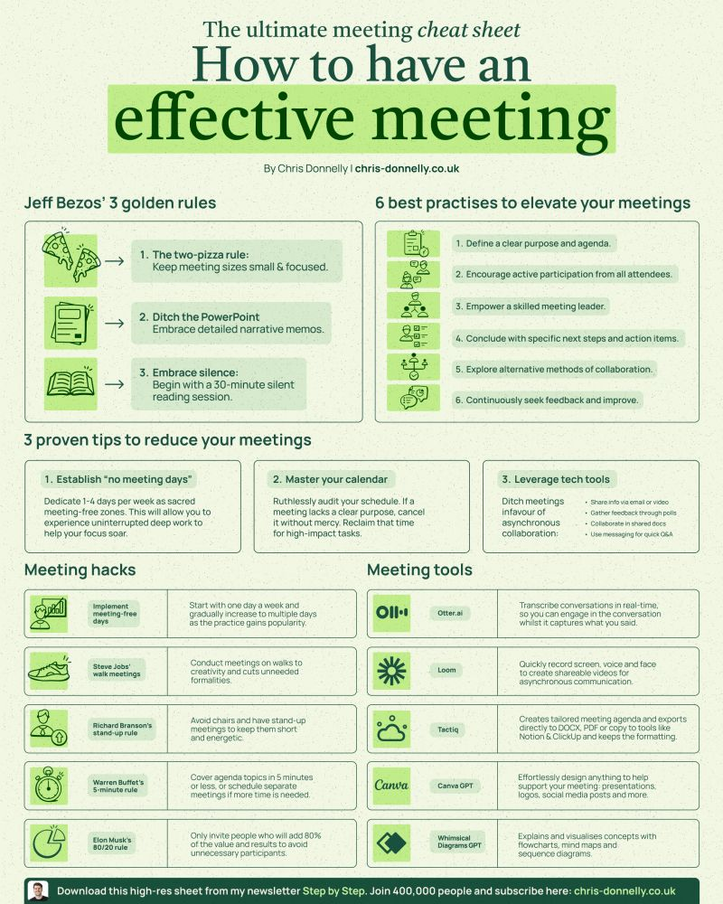

Short Prompts
Transcribe Image Results - Meeting
Prompt extract text from attached image and format it in markdown table as closely as possible to the formatting of the image 1727092661899.jpeg Result Citations: [1]...
Source: AI/Short Prompts/Transcribe Image Results - Meeting.md
Prompt
extract text from attached image and format it in markdown table as closely as possible to the formatting of the image

Result
| The ultimate meeting cheat sheet |
|---|
| ---------------------------------- |
| How to have an effective meeting |
| By Chris Donnelly \ | chris-donnelly.co.uk |
| Jeff Bezos' 3 golden rules | 6 best practises to elevate your meetings |
|---|
| 1. The two-pizza rule: Keep meeting sizes small & focused. | 1. Define a clear purpose and agenda. |
| 2. Ditch the PowerPoint: Embrace detailed narrative memos. | 2. Encourage active participation from all attendees. |
| 3. Embrace silence: Begin with a 30-minute silent reading session. | 3. Empower a skilled meeting leader. |
| 4. Conclude with specific next steps and action items. |
| 5. Explore alternative methods of collaboration. |
| 6. Continuously seek feedback and improve. |
| 3 proven tips to reduce your meetings |
|---|
| --------------------------------------- |
| 1. Establish "no meeting days" | 2. Master your calendar | 3. Leverage tech tools |
| Dedicate 1-4 days per week as sacred meeting-free zones. This will allow you to experience uninterrupted deep work to help your focus soar. | Ruthlessly audit your schedule. If a meeting lacks a clear purpose, cancel it without mercy. Reclaim that time for high-impact tasks. | Ditch meetings in favour of asynchronous collaboration: • Share info via email or video • Gather feedback through polls • Collaborate in shared docs • Use messaging for quick Q&A |
| Meeting hacks | Meeting tools |
|---|
| Implement meeting-free days | Otter.ai: Transcribe conversations in real-time so you can engage in the conversation whilst it captures what you said. |
| Steve Jobs' walk meetings: Conduct meetings on walks to improve mood and cultivate creativity. | Loom: Quickly record screen, voice and face to create shareable videos for asynchronous communication. |
| Richard Branson's stand-up rule: Avoid chairs and have stand-up meetings to keep them short and energetic. | Tactiq: Creates tailored meeting agenda and exports directly to DOCX, PDF or copy to tools like Notion & ClickUp and keeps the formatting. |
| Warren Buffet's 5-minute rule: Cover agenda topics in 5 minutes or less, or schedule separate meetings if more time is needed. | Canva GPT: Effortlessly design anything to help support your meeting presentations, logos, social media posts and more. |
| Elon Musk's 80/20 rule: Only invite people who will add 80% of the value and results to avoid unnecessary participants. | Whimsical Diagrams GPT: Explains and visualizes concepts with flowcharts, mind maps and sequence diagrams. |
| Download this high-res sheet from my newsletter Step by Step. Join 400,000 people and subscribe here: chris-donnelly.co.uk |
|---|
| --------------------------------------------------------------------------------------------------------------------------- |
Citations:
[1] https://pplx-res.cloudinary.com/image/upload/v1727105899/user_uploads/obrvjlsgt/1727092661899.jpg